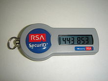

Security Risks and Solutions for Phone Numbers
Most websites use phone numbers to allow their users to find their forgotten passwords. If a user forgets the password, the user can find the password by providing their associated phone numbers, then the website will send a text message. Depending on the websites, the text message will include instructions or a link to reset the user’s password.
However, using phone numbers to find the password could lead to a security vulnerability. Hackers can easily pretend to be an owner of a certain phone number. They can contact the phone carrier company, transfer the phone number to their device. Phone carrier companies do not check if a person who requested transferring a phone number is the actual owner of that phone number, which allows hackers to access random phone numbers for a short timeperiod of time. But that short time periodtimeperiod of time is enough for hackers to receive a password reset text and obtain access to someone’s accounts.
Two-factor authentication(2FA) can reduce security risks. 2FA requires the user to enter a short-lived code that is only accessible from the user’s device. Even if a hacker obtains the user’s phone number and succeeds in loggingto log in, the hacker still needs the 2FA code–the hacker does not own the user’s physical device. Therefore, therefore, the hacker cannot obtain the 2FA code.
2FA helps reduce the risk of being hacked. However, however, if the user loses their device, the user also loses the ability to access the valid 2FA code. In this case, the user can access their account by receiving a password reset email or text, which means increasing the hacking attack surface.
Authy helps users manage their 2FA for various websites in a central place. Authy allows users to access valid 2FA codes from Authy’s website and mobile apps. The users can log in to Authy’s account from multiple devices, and the users do not have to keep getting a new 2FA code for new devices. Keeping 2FA codes on third-party 2FA services such as Authy also increases the risk of being hacked. But since the likelihood of a hacker obtaining access to a third-party 2FA service and other websites at the same time is low, using third-party 2FA services may be a good idea to secure accounts.
Source. (n.d.). RSA SecurID token. Retrieved April 12, 2022. https://en.wikipedia.org/wiki/Multi-factor_authentication